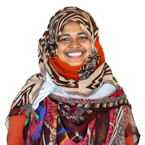

I am a PhD Candidate in Computer Science at the Irving K. Barber Faculty of Science, University of British Columbia – Okanagan, supervised by Mohammad Khalad Hasan. I began my graduate studies as an MSc student under Dr. Hasan and later transitioned into the PhD program. Before that, I earned my B.Sc. in Computer Science and Engineering from Shahjalal University of Science & Technology (SUST), Bangladesh, where I also worked as an undergraduate teaching faculty member in the Department of Computer Science and Engineering.
My research sits at the intersection of Human-Computer Interaction (HCI) and ubiquitous computing. I focus on designing and evaluating interaction techniques for mobile, wearable, and AR/VR devices. As an HCI researcher, I investigate user preferences and develop interaction methods that enhance how people engage with smart technologies — ranging from smartphones and smartwatches to immersive headsets. My current interests include ubiquitous interfaces, mobile and wearable UI design, and next-generation interaction techniques. My research interest also includes Natural Language Processing (NLP) and Machine Learning (ML). My work has been published at premier venues such as CHI, ISMAR, TVCG. I’ve also collaborated with researchers across domains on interdisciplinary projects involving technology, behavior, and accessibility.
Recent Highlights
- July 2025: Paper got accepted at ISMAR 2025!!
- April 2025: Attended CHI 2025 in Yokohama, Japan and presented my paper.
- March 2025: üèÖ CHI Best Paper Honorable Mention Award!!
- January 2025: Paper got accepted at CHI 2025!!
- October 2024: Presented paper at ISMAR 2024.
- September 2024: üéìReceived UBC Graduate Research Scholarships for 2024-2025 academic year.
- July 2024: Two papers got accepted at ISMAR 2024!!